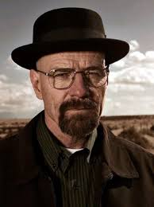

O que diabos é um Breaking Bad?
Breaking Bad (br: Quebrando Mal / pt: Maleza a Quebrar / rc: A Química do Mal) é uma série de televisão das primeiras três letras do alfabeto, escrita e produzida por um jovem sagaz chamado Vince Gilligan. Conta a história de Walter White, um professor de química falido que tem câncer e que resolve fabricar drogas para animar a cidade e ficar rico. Após mostrar genialidade no enredo e Gus ter comprado os críticos, a série passou a ser considerada uma das melhores séries já produzidas.

Por que que a série ficou famosa?
A série ficou famosa porque Gus, o cara que domina 80% do tráfico de drogas mundial, comprou todos os críticos. Quebrar mal significa passar a fabricar e vender drogas, e se transformar de mocinho para vilão em 2 anos.
Personagens Principais
-
Gus Fring

O boss. O chefão do crime (até Walter surgir). O dono da loja de coxas de frango. Um verdadeiro gentleman, um homem de negócios. Em sua última aparição, devido a uma das palhaçadas de Walter, queimou a cara (literalmente).
-
Walter Branco
O protagonista, o herói, o vilão, o badass, o imenso Heisenberg. O personagem mais esférico já criado. É ele quem faz a cidade deixar de ser extremamente chata. Dizem ser o irmão de Gordon Freeman.
-
Jesse Pinkman (Homem Rosa)
Começa a série como apenas um traficante e termina como um cara consciente, trabalhador, humilde, gente fina, amigo da galera e candidato a vereador.
-
Saul Goodman
Não beba e dirija. Mas se beber e dirigir, ligue pra ele. Também é o personagem principal da sua própria série, Better Call Saul
-
Hank Schrader
Tira da pesada da DEA. É o cara dos minerais.
-
Flynn
Filho de Walter e Skyler. Passa a série inteira comendo café da manhã, ou fazendo peripécias com o amigo imaginário Louis. Ele dirige com um pé no acelerador e o outro no freio.
Arquivos Secretos
Clique Aqui para descobrir como funciona a produção de metanfetamina!! (segredo)